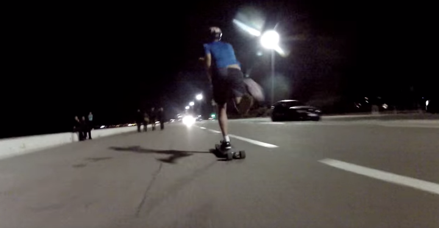
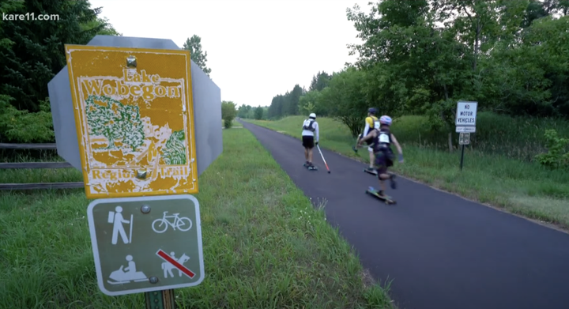
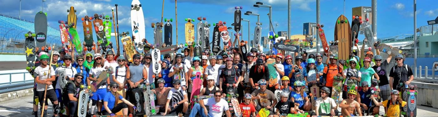
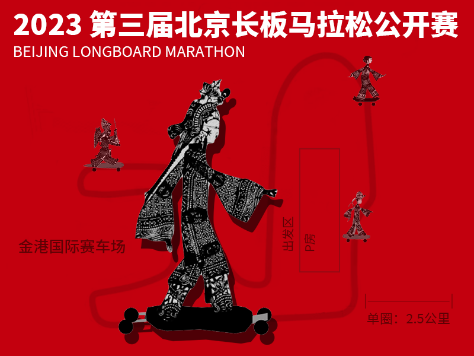

作为一项相对自由、街头的运动，长板的正式赛事并不是很多，多为民间发起。
包括各种距离1公里/5公里/5 mile赛事。部分短距离比赛是作为大赛事的分项，如美国Centennial Sk8 滑板节的5公里、8.5英里，北京马拉松的迷你马拉松等。也有少数独立的短距离赛事。
利用美国的州际绿道系统，一些长途爱好者举办过小规模的多日拉力赛，选手需要负担当天赛段的给养，在当天赛段结束后获得补给，可能还需要露营。
24小时 Ultraskate 这一概念是James Peters在2006年创造的，创办这一活动的初衷就是为了回答一个问题：“如果只有一块长板，你能在24小时里滑多远？” 作为长距离滑板的旗舰赛事，Ultraskate赛事的主要举办地为美国迈阿密（2013-2022）和荷兰（2013-2019，2022）。新西兰也举办过小规模的Ultraskate（2015，2017）。其他地区举办过降级“Ultraskate”，如新加坡6小时、12小时Ultraskate。
大多数是由民间板店自发邀请当地滑手或者联合本地其他板店一起举行的比赛，还有部分是全国知名品牌所举行的全国分站式的比赛。
本站比赛共设置三个项目：陆地冲浪板2.5公里竞速、“全民体验赛”多板类5公里迷你马拉松、长板42公里全程马拉松。共有来自5个国家、200余名选手报名参加，参赛人数创赛事新高。其中年龄最小的4岁、年龄最大的超过50多岁。比赛共产生了40多名优胜选手站上领奖台。
